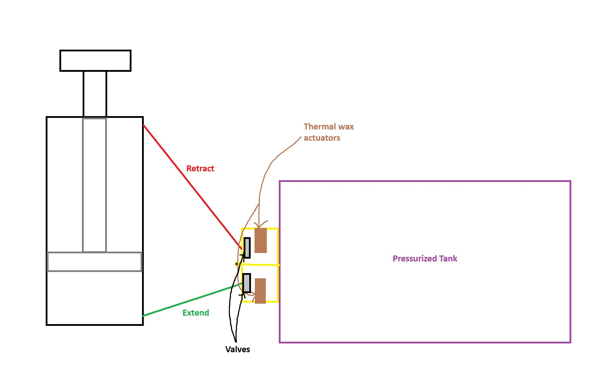

Project
Space Mission Louver System
Space/thermal louver mechanism project with pneumatic/thermal design context, CAD/report figures, prototype visuals, and selected documentation.
Space mission louver system shown with mechanism visuals, report and presentation figures, and selected PDFs.
